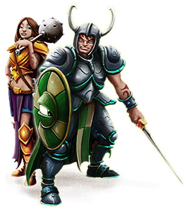

Classes
A escolha da vocação e/ou classe do jogador define o rumo de sua jornada. Equipamentos, caçadas, habilidades, entre muitos outros detalhes se definem através desta decisão.
Após o Patches/10.55, todos os personagens iniciantes irão para Dawnport, onde poderão testar as vantagens e desvantagens de cada uma das quatro vocações antes de irem para o continente principal.
Sendo assim, cada jogador pode escolher uma vocação distinta para seguir. São elas:
- Knight: Mestre de combate corpo a corpo, possuindo resistência imensa.
- Paladin: Mestre de luta à distância, domínio leve da artes mágicas.
- Druid: Mestre da arte da cura e suporte.
- Sorcerer: Mestre das artes mágicas, agressivas e ofensivas.

Sorcerer
Um Sorcerer, mestre arcano das artes negras, dedica sua vida ao estudo da magia. Ele é profundamente convicto que superioridade encontra-se na sabedoria e não na força física. Sorcerer causa dano mágico e, assim como o Druid, ele é capaz de controlar elementos. Neste caso o fogo e a eletricidade.
Usando seu conhecimento nas artes destrutivas o Sorcerer é o único capaz de criar as poderosas runas de Sudden Death. Também é capaz de atacar múltiplos inimigos de uma vez como nenhuma outra vocação.
O equipamento de um Sorcerer é classificado como leve, geralmente são usadas wands, mantos ou capas ao invés de armaduras pesadas e spellbooks no lugar de escudos.

Paladin
O Paladin, um arqueiro sagrado, rápido e infalível, ataca mortalmente seus inimigos à distância com tal velocidade que ele parece ser invisível para seus alvos. Paladin causa dano físico, mas também domina o dano sagrado, devido a sua força espiritual, e usa algumas magias desse gênero para derrotar rapidamente seus oponentes. Seu potencial mágico é tão equilibrado quanto sua resistência física.
Em batalha, um Paladin procura manter seus adversários o mais longe possível para usar sua vantagem de ser um lutador de distância. Ele precisa estar em movimento o tempo todo para evitar se tornar um alvo. E mesmo que não consiga correr e usar suas técnicas à distância, ainda pode mudar para a luta corpo-a-corpo, mas sem alcançar o nível de um knight. Para uma luta bem sucedida, ele pode adicionar alguns ataques de suporte como Sharpshooter ou Swift Foot.
O equipamento de um Paladin consiste em armas à distância, como bows, crossbows, spears entre outras, também escudo, armadura e armas corpo-a-corpo (espadas, machados e martelos) de uma mão. Paladins podem usar a Assassin Star, uma das armas mais poderosas do Tibia.
Druid
O Druid é devotado e relacionado com a natureza, de onde provém toda a sua força. Ele pratica o controle sobre elementos da natureza para o benefício de todos os humanos. Druids conhecem a arte da cura, e possuem mais magias curativas do que qualquer outra vocação. O Druid causa danos mágicos. Além de rods, ele pode usar elementos como ice ou earth, por exemplo.
O Druid é capaz de summonar até duas criaturas para lutarem ao seu lado e sua velocidade são proporcionais à velocidade do Druid. Além de ser a única vocação com grande variedade de runas de cura.
O equipamento de um Druid é considerado leve, além dos mantos ou capas no lugar de armaduras e spellbooks para sua proteção, ele também faz uso de rods.

Knight
Um Knight é um guerreiro forte e sempre pronto para uma batalha. Em combate em grupo, o Knight se posiciona sempre na linha de frente para proteger os demais jogadores. Ele é aquele que leva os maiores hits e não se rende ao ser cercado por muitos inimigos. Assim, as vantagens do knight são um forte escudo e armas. O Knight causa Dano Físico, mas ele também pode fazer um tipo secundário de dano usando armas mágicas encantadas, por exemplo. Devido à sua força e usando certas táticas, um Knight é capaz de matar criaturas muito fortes.
Com base em sua natureza, ele é capaz de usar algumas magias. Como rage para aumentar seu dano ou protector para aumentar sua defesa por um determinado período de tempo. Ainda assim, o Knight não deve se tornar um usuário de magias.
O equipamento de um Knight é classificado como pesado, e portanto, apenas utilizável por ele, pois ele seria o único com força suficiente para usar essas armaduras e armas. Sua força bruta lhe dá maior capacidade para carregar equipamentos e itens em relação as outras vocações.
